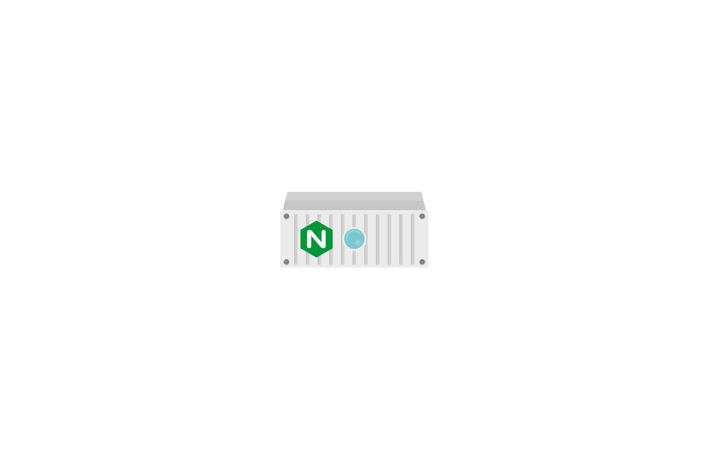
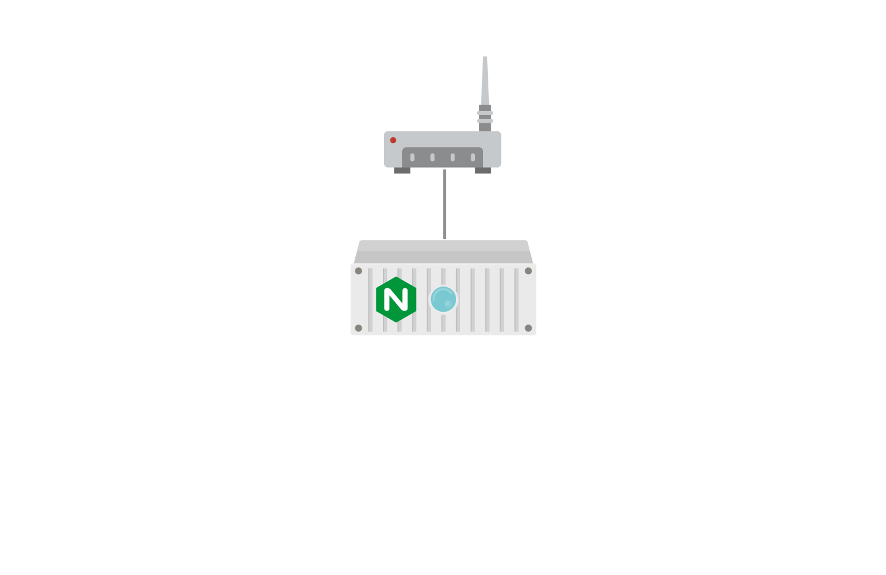
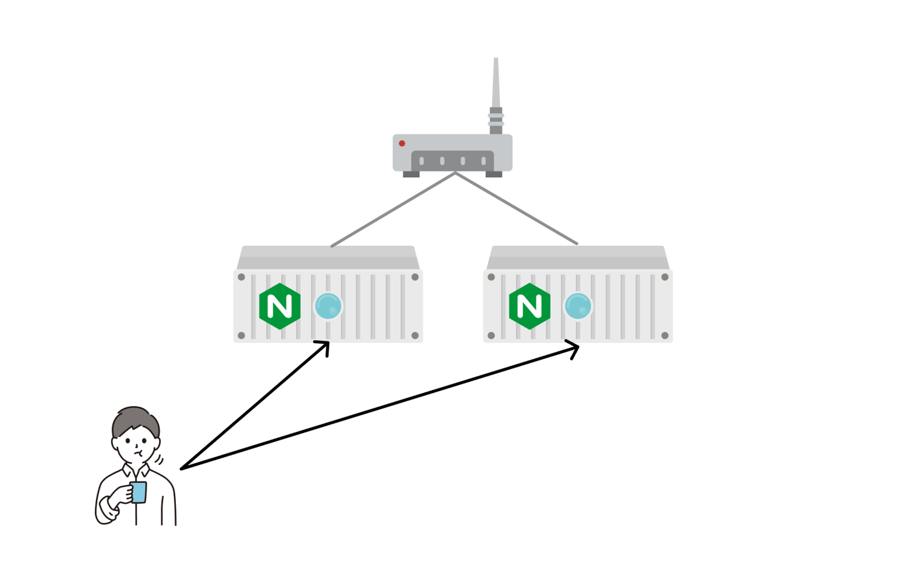
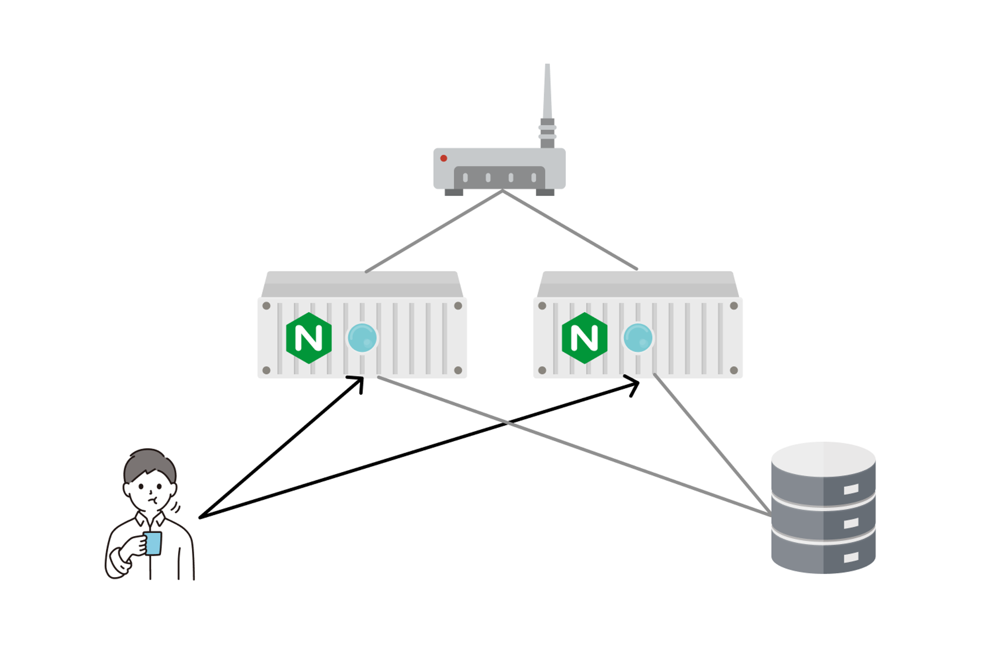
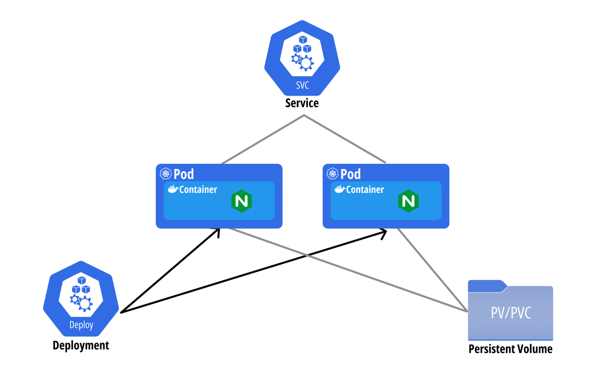
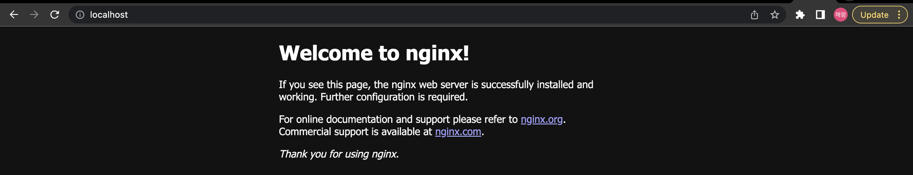

Kubernetes 맛보기
처음부터 쿠버네티스의 구조 및 작동원리 등을 배우는 것은 쿠버네티스를 처음에 배우는 사람에게는 자칫 지루해질 수도 있고 클러스터 관리자가 아닌 사용자 입장에서는 불필요할 수도 있다… 먼저 쿠버네티스에 등장하는 핵심 개념부터 몇개 살펴보자.
스토리텔링: NGINX 가 돌아가는 홈서버를 구축해보자.
- A씨는 설 명절에 집에서 할 것이 없어 간단하게 NGINX 가 돌아가는 홈서버를 구축보려 한다. 먼저 A씨는 감자마켓에서 서버로 사용할 컴퓨터를 하나 구입하고, 거기에 NGINX 를 설치한다.

- 설치를 완료한 후
localhost로 접속해보니 잘 작동한다. 하지만 A씨는 조금 더 욕심을 내어 자신의 사이트를 외부에서도 접속이 되게 하고 싶다. 이를 위해 라우터를 설치하고 외부 접속을 위한 설정을 한다.

- A씨가 자신의 홈서버를 주변에 열심히 소문낸 결과, 접속자 수가 폭증하기 시작했다. A씨는 이에 대응하기 위해 동일한 서버를 한대 더 구비해 부하를 분산하고자 한다. 하지만 시간이 부족한 A씨는 친구 B씨를 데려와 서버 관리를 부탁한다. B씨는 한대가 고장나면 곧바로 다른 서버를 설치하는 등 항상 두개의 서버가 작동하고 있게 노력한다.

- 서버들을 사용하던 중, A씨는 서버들의 데이터를 외부에 보관하면 좋겠다는 생각을 하게 된다. 따라서 A씨는 외부 스토리지서버를 한대 구입한 후, 각 서버들이 사용할 수 있게 설정하였다.

위의 이야기를 그대로 쿠버네티스로…

- Pod: 파드는 A씨가 설치한 서버에 비유될 수 있는 개념으로, 쿠버네티스에서 가장 작은 컴퓨팅 유닛 오브젝트이다.
- 서버에 여러개의 프로세스가 돌아갈 수 있는 것처럼, 파드에도 여러개의 프로세스가 작동할 수 있으며 이때 프로세스들은 컨테이너 형태로 구성된다.
- Service: 파드를 클러스터 내외부에 노출시켜 네트워크를 통해 접근할 수 있게 하는 오브젝트이다.
- Deployment: 파드를 관리하는 관리자로 비유될 수 있는 개념으로, 지정해준 개수의 파드가 항상 작동할 수 있도록 보장해주는 역할을 한다.
- 엄밀히 말하면, 파드의 개수를 일정하게 유지시키는 것은 ReplicaSet 의 역할로, Deployment 는 ReplicaSet 를 관리하며 롤링 업데이트 등의 추가적인 기능을 제공한다.
- 즉, Pod -> ReplicaSet -> Deployment 로 소속관계를 표현할 수 있다.
- Volume: 파드의 컨테이너가 사용할 수 있는 볼륨이다.
NGINX 배포 실습
Volume 관련 부분은 실습이 어렵기 때문에 일단은 제외하였습니다.
Pod 생성하기
- 파드 생성
kubectl run nginx --image=nginx:stable- 생성된 파드 확인
kubectl get pod nginxNAME READY STATUS RESTARTS AGE
nginx 1/1 Running 0 7m26s
Deployment 생성하기
- 하지만, 파드를 단독으로 생성하는 경우는 거의 없고, Deployment 등의 다른 오브젝트를 생성하여 파드가 생성되도록 하는 것이 일반적이다.
- 디플로이먼트 생성하기
kubectl create deployment nginx --image nginx:stable- 생성된 디플로이먼트 확인
kubectl get deployment nginxNAME READY UP-TO-DATE AVAILABLE AGE
nginx 1/1 1 1 3m42s
- 디플로이먼트의 가장 중요한 역할은 파드를 여러개로 복제하고 항상 일정한 개수가 유지되도록 하는 것이다. 다음의 명령어를 통해 파드의 개수를 증가시켜보자.
kubectl scale deployment nginx --replicas 3- 디플로이먼트 확인
kubectl get deployment nginxNAME READY UP-TO-DATE AVAILABLE AGE
nginx 3/3 3 3 5m21s
Service 생성하기
본 실습에서는
LoadBalancer타입의 서비스를 생성하는데, 이에 대한 자세한 내용은 이후에 배운다.
- 다음의 명령어를 통해 Service 를 생성할 수 있다.
kubectl expose deployment nginx --type LoadBalancer --name nginx --port 80- 생성된 Service 확인
kubectl get service nginxNAME TYPE CLUSTER-IP EXTERNAL-IP PORT(S) AGE
nginx LoadBalancer 10.103.178.141 localhost 80:32560/TCP 53s
- 브라우저를 통해
localhost로 접속해보면 다음과 같은 화면을 볼 수 있다.

리소스 삭제하기
- 이후의 실습을 위해 생성했던 리소스들을 삭제한다.
- 생성한 리소스는
kubectl delete $RESOURCE $NAME을 통해 삭제할 수 있다.
kubectl delete pod nginx
kubectl delete deployment nginx
kubectl delete service nginxYAML 을 이용해 배포하기
kubectl create deployment ...등의 명령어를 통해 리소스들을 생성하는 것 이외에도, 리소스를 정의하는 YAML 파일을 통해 생성하는 것도 가능하다.- YAML 파일을 이용할 때에는
create혹은apply명령어에-f옵션을 이용하여 파일을 명시해 주면 된다.
기본적으로
create는 생성 명령어이고apply는 변경 명령어이나 생성에도 사용할 수 있습니다. 하지만,create로 생성한 리소스에apply를 하게 되면 경고 문구가 출력되니 변경의 가능성이 적은 리소스는create를 사용하고 그렇지 않은 리소스는apply를 이용할 것을 권장합니다.
kubectl create -f $YAML_FILE
kubectl apply -f $YAML_FILE- 그럼 이제 위에서 배포한 것을 동일하게 YAML 파일로 배포하는 것을 실습해 보자.
NGINX 를 YAML 을 이용해 배포하기
- 아래의 두 YAML 파일을 배포하면, 위 실습에서 생성했던 Deployment 와 Service 를 동일하게 배포할 수 있다.
apiVersion: apps/v1
kind: Deployment
metadata:
name: nginx
spec:
selector:
matchLabels:
app: nginx
template:
metadata:
labels:
app: nginx
spec:
containers:
- name: nginx
image: nginx:stableapiVersion: v1
kind: Service
metadata:
name: nginx
spec:
ports:
- name: http
port: 80
protocol: TCP
targetPort: 80
selector:
app: nginx
type: LoadBalancerYAML 을 이용하는 이유: 리소스의 코드화 (Infrastructure as Code, IaC)
- YAML 파일을 이용하면 쿠버네티스 클러스터에 생성된 리소스들을 코드로써 관리할 수 있으며, 여기에는 다음과 같은 장점이 있다.
- 리소스 생성과 편집, 삭제가 간편해진다.
- YAML 파일을 이용해 리소스를 생성하고, YAML 파일을 편집해 리소스를 변경하며, YAML 파일을 이용해 리소스를 삭제할 수 있다.
- git 과 같은 버전 관리 툴을 이용하여 변경 이력 추적을 간편하게 할 수 있다.
- 리소스 생성과 편집, 삭제가 간편해진다.
- 코드로 관리하는 것 이외에도, YAML 파일을 이용하면 cli 툴에서 제공하지 않는 다양한 설정들이 가능하다.
추가적인 Kubectl 명령어
Kubectl get -o 옵션
-o wide: 기본 제공되는 정보 이외의 추가적인 정보들을 같이 출력한다.
kubectl get $RESOURCE $NAME -o wide
kubectl get deployment nginx -o wide-o yaml: 배포된 리소스의 상태를 YAML 포맷으로 조회한다.
kubectl get $RESOURCE $NAME -o yaml
kubectl get deployment nginx -o yamlKubectl describe 명령어
describe명령어는 배포된 리소스의 자세한 정보를 출력해준다.
kubectl describe $RESOURCE $NAME
kubectl describe deployment nginx